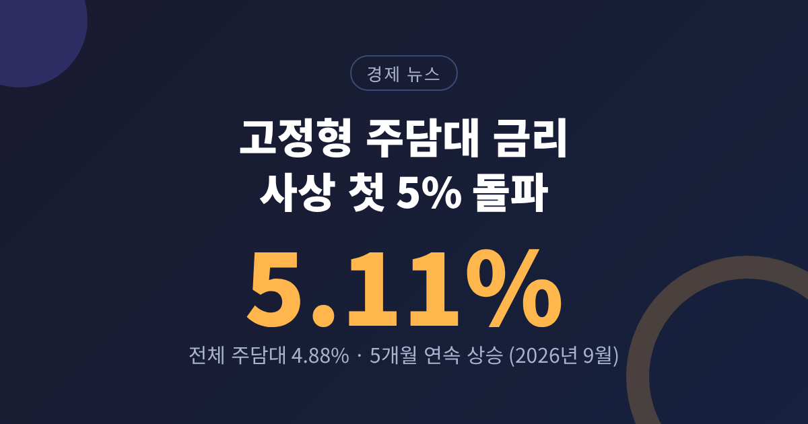
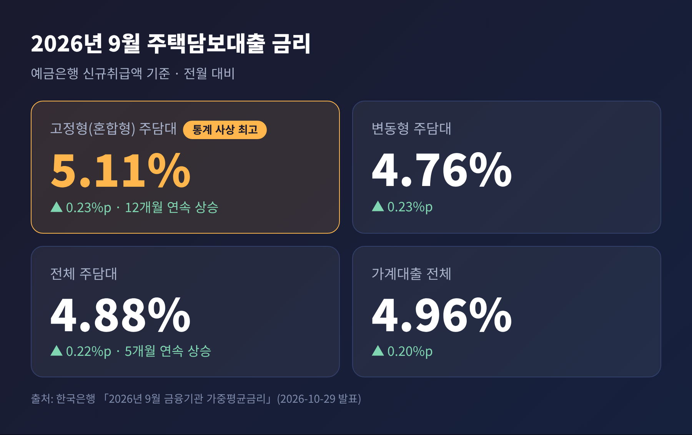
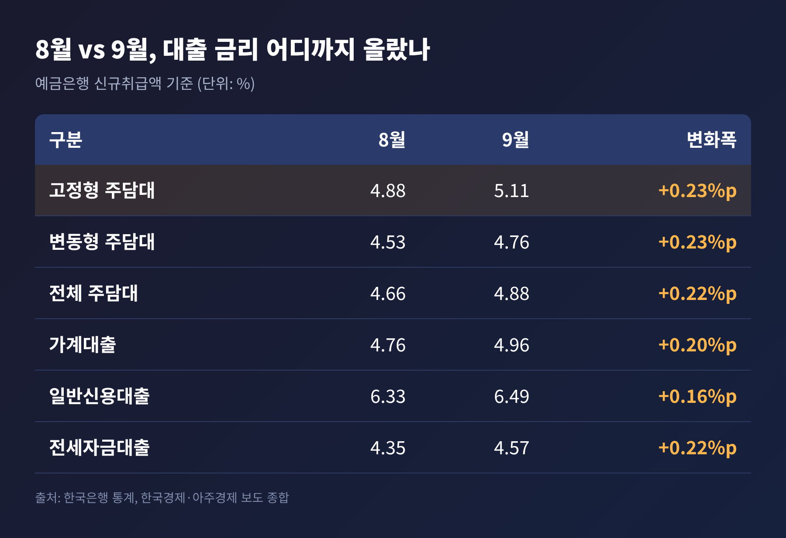
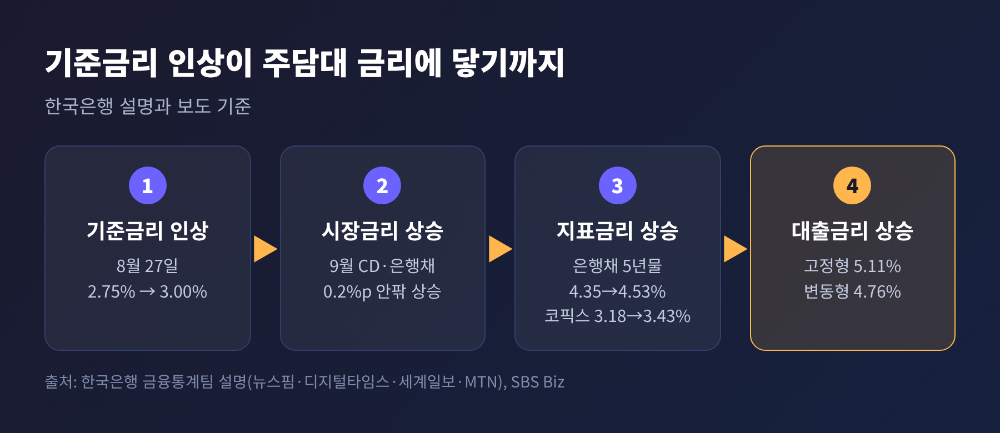
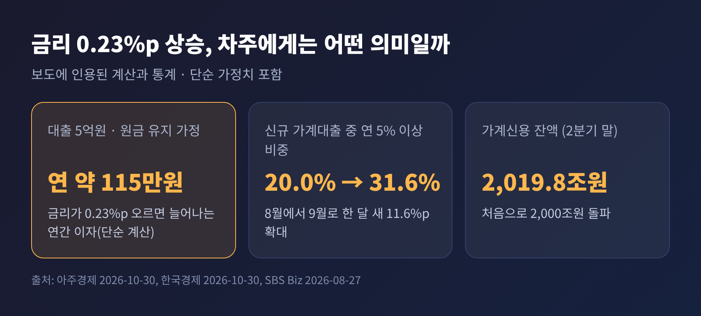
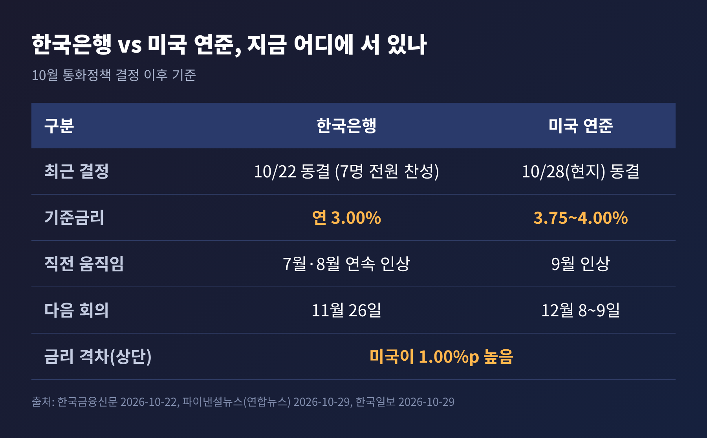
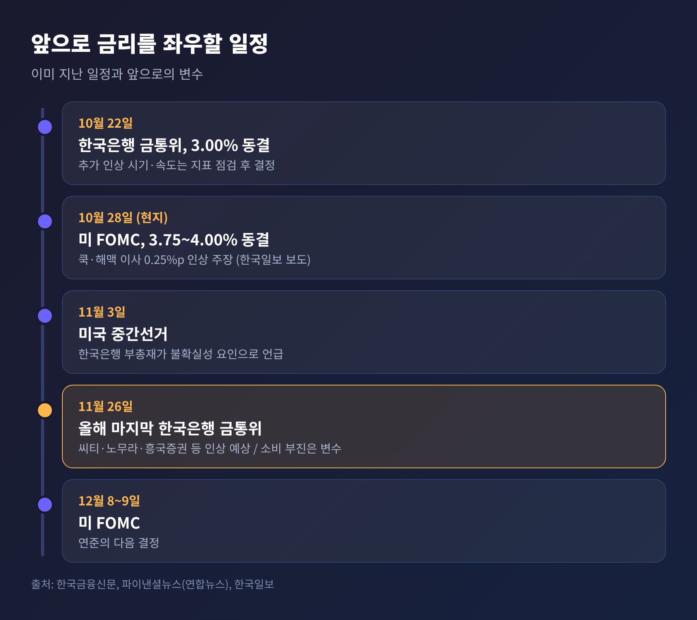

이번 글에서는 시중은행 고정형(혼합형) 주택담보대출 금리가 처음 5%를 넘어선 소식을 정리해 보겠습니다. 한국은행이 10월 29일 발표한 9월 통계에서 고정형 주담대 금리는 5.11%, 전체 주담대 금리는 4.88%로 5개월 연속 올랐습니다. 원인은 시장금리 상승이 가장 크고, 변수는 11월 26일 금융통화위원회입니다.
3줄 요약
- 9월 고정형 주담대 금리는 5.11%로 2013년 1월 통계 집계 이후 처음 5%를 넘었습니다.
- 8월 기준금리 인상 뒤 은행채·CD 금리가 0.2%p 안팎 오른 것이 주된 이유입니다.
- 10월 들어 은행채 금리는 내렸지만, 11월 금통위의 추가 인상 여부가 다음 방향을 정할 변수입니다.
한국은행의 「2026년 9월 금융기관 가중평균금리」(예금은행 신규취급액 기준)가 10월 29일 공개되었습니다.
핵심 수치는 다음과 같습니다.

고정형 5.11%는 한국은행이 고정형과 변동형을 나누어 집계하기 시작한 2013년 1월 이후 가장 높은 수치입니다. 고정형은 지난해 10월부터 12개월 연속 올랐습니다. 전체 주담대 금리는 2012년 4월(4.94%) 이후 약 14년 5개월 만의 최고 수준입니다.
고정형과 변동형의 차이도 눈여겨볼 만합니다. 지금은 고정형이 변동형보다 0.35%p 높습니다. 같은 대출이라면 5년간 금리를 묶어 두는 대가로 더 비싼 이자를 내야 하는 구조입니다.
평균 금리보다 분포가 더 많은 것을 말해 줍니다. 한국경제 등이 전한 통계를 보면, 신규 가계대출 중 연 5% 이상 비중은 8월 20.0%에서 9월 31.6%로 뛰었습니다. 4.5% 이상 비중은 53.6%에서 70.1%로 늘었습니다. 한 달 사이에 새 가계대출 열 건 중 일곱 건이 4.5%를 넘긴 셈입니다.
8월에는 5% 이상 대출이 다섯 건 중 한 건이었습니다. 9월에는 세 건 중 한 건으로 늘었습니다.
기존 차주도 무관하지 않습니다. 잔액 기준 주담대 금리는 4.22%에서 4.26%로, 가계대출 금리는 4.52%에서 4.58%로 올랐습니다. 신규 취급 금리보다 느리지만, 변동금리 대출이나 금리를 새로 정하는 시점이 돌아오는 대출부터 시장금리가 반영됩니다.

주담대 금리 상승의 출발점은 기준금리입니다. 한국은행은 7월에 이어 8월 27일에 기준금리를 연 2.75%에서 3.00%로 0.25%p 올렸습니다. 연속 인상은 2022년 4월부터 2023년 1월까지 이어진 7연속 인상 이후 3년 7개월 만이었습니다. 높은 물가와 강한 성장세에 선제적으로 대응한다는 판단이었습니다.
그 뒤 시장금리가 반응했습니다. 한국은행 김성준 금융통계팀장은 8월 인상 이후 CD와 은행채 금리가 9월에 0.2%p 안팎 올랐다고 설명했습니다. 그리고 이번 상승의 가장 큰 요인으로 시장금리를 꼽았습니다.
고정형 주담대는 은행채 5년물(AAA) 금리를 기준으로 삼습니다. 이 금리는 9월 평균 4.35%에서 4.53%로 올랐습니다. 변동형이 따르는 신규취급액 기준 코픽스는 3.18%에서 3.43%로 0.25%p 올랐습니다. 한국은행은 지난해 10월부터 올해 9월까지 은행채 5년물이 1.54%p, 고정형 주담대가 1.46%p 올랐다고 밝혔습니다. 채권 금리 상승이 대출 금리에 거의 그대로 얹힌 것입니다.

시장금리만이 전부는 아닙니다. 은행들이 수신자금을 확보하려고 예금금리를 올린 점도 대출금리에 부담을 줍니다. 9월 저축성수신금리는 3.45%로 0.24%p 올랐고, 연 4% 이상 정기예금의 비중은 0.5%에서 10.6%로 커졌습니다.
가계대출 관리도 일부 영향을 줬을 수 있습니다. 한국은행은 가산금리 조정과 가계대출 관리 강화가 영향을 줬을 가능성을 언급하면서도, 9월에는 시장금리가 가장 큰 요인이라고 선을 그었습니다. 규제가 금리를 끌어올렸다고 단정하기는 어렵다는 이야기입니다.
금융당국의 기조는 10월 15일 가계부채 점검회의에서 확인할 수 있습니다. 6.27 대책과 8.13 종합 금융대책을 단계적으로 시행 중입니다. 올해 가계대출 증가율 목표는 1.5%에서 3.0%로 올렸고, 이주비·중도금·잔금대출 같은 집단대출은 따로 관리하기로 했습니다. 9월 전 금융권 가계대출은 2.2조원 줄어 올해 처음 순감소했습니다. 다만 주담대는 3.3조원 늘었고, 당국은 집값 상승 기대가 리스크로 남아 있다고 평가했습니다.
금리 0.23%p는 작아 보이지만 대출 규모가 크면 체감이 달라집니다. 아주경제는 대출 5억원을 원금 변동 없이 유지한다고 가정할 때, 금리가 0.23%p 오르면 연간 이자가 단순 계산으로 약 115만원 늘어난다고 짚었습니다.
가계 전체로 보면 규모가 더 큽니다. SBS Biz는 8월 인상 당시 주담대 금리가 0.25%p 오르면 연간 이자 부담이 약 1조 8천억원 늘어나는 것으로 추산된다고 전했습니다. 가계신용 잔액은 올해 2분기 말 처음 2,000조원(2,019조 8천억원)을 넘었습니다.

선택의 고민도 커졌습니다. 아주경제가 전한 은행 관계자들의 이야기는 엇갈립니다. 한 시중은행에서는 고정형 문의가 늘지만 당장 금리가 낮은 6개월 변동형을 택하는 차주가 더 많다고 했습니다. 다른 은행에서는 금리가 더 오를 것으로 보고 5년 고정을 고르는 고객이 늘었다고 했습니다. 신규 주담대에서 고정형 비중은 34.2%로 1.1%p 낮아졌지만, 가계대출 잔액 중 고정형 비중은 24.0%로 두 달 연속 올랐습니다.
대출 실행 후 약 3년이 지나면 중도상환수수료 부담이 사라집니다. 그래서 낮은 변동금리로 시작해 갈아타려는 수요도 있습니다. 하지만 대환이 늘 유리한 것은 아닙니다. 새 상품의 금리와 한도를 함께 비교하셔야 합니다.
부동산 시장은 두 방향의 힘을 받습니다. 이자 부담은 수요를 누르는 요인입니다. 한편 한국은행은 10월 통화정책방향문에서 수도권 주택시장과 가계부채로 인한 금융불균형 위험에 계속 유의해야 한다고 밝혔습니다. 가격이 오를 것이라는 기대가 남아 있다는 뜻으로 읽힙니다.
앞으로를 가를 변수는 크게 둘입니다.
첫째는 기준금리입니다. 한국은행은 10월 22일 금통위에서 위원 7명 전원 일치로 기준금리를 연 3.00%에 동결했습니다. 다만 추가 인상의 시기와 속도를 점검해 정하겠다는 방침은 유지했습니다. 그 뒤 발표된 3분기 실질 GDP는 전기 대비 1.0%로, 한국은행의 8월 전망(0.3%)을 크게 웃돌았습니다. 9월 소비자물가는 2.9%였습니다.
미 연준은 10월 27~28일 FOMC에서 기준금리를 3.75~4.00%로 동결했습니다. 한국과의 금리 격차는 상단 기준 1.00%p입니다. 워시 의장의 발언을 두고는 추가 인상 가능성을 열어 두었다는 해석과 시그널이 뚜렷하지 않았다는 해석이 함께 나옵니다. 다음 FOMC는 12월 8~9일입니다.

이런 흐름 속에서 일부 이코노미스트는 11월 26일 금통위의 인상을 예상합니다. 씨티는 11월과 내년 2월에 각각 0.25%p 인상해 최종금리가 3.50%에 이를 가능성을 제시했습니다. 흥국증권도 11월 인상을 예상했습니다. 반면 3분기 민간소비는 전기 대비 0.2% 줄어 2022년 4분기 이후 처음 감소했습니다. 노무라증권은 소비 부진이 이어지면 인상 사이클이 일찍 끝날 수 있다고 짚었습니다. 전망은 하나로 모이지 않았습니다.
둘째는 지표금리입니다. 반대 방향의 신호도 있습니다. 은행채 5년물 금리는 10월 23일까지 0.16%p 내렸고, 아주경제에 따르면 10월 29일 기준 4.2% 수준입니다. 한국은행 김성준 팀장은 지표금리를 따라가면 대출금리가 내려갈 가능성이 있다고 봤습니다. 다만 은행의 가산금리 조정이 변수여서 월말 수치를 더 확인해야 한다고 덧붙였습니다. 금융권 관계자도 은행채 금리가 내렸다고 대출금리가 같은 폭으로 내려가지는 않는다고 말했습니다.

정리하면 이렇습니다. 시장금리가 내려가는 신호는 있으나, 11월 금통위에서 인상이 나오면 다시 올라갈 수 있습니다. 어느 쪽으로 기울지는 지금으로서는 알 수 없습니다.
마지막으로 한 가지만 덧붙이겠습니다. 이번 통계는 9월 한 달의 신규 취급 금리입니다. 다음 달 공개될 10월 통계에서 은행채 금리 하락이 얼마나 반영되었는지 확인할 수 있습니다. 한 달 수치로 추세를 단정하기보다 지표금리와 금통위 결과를 함께 보시길 권합니다.
고정형 5%는 하나의 기록이지만, 결국 남는 것은 "금리는 정책이 움직이고, 대출금리는 시장이 뒤따른다"는 단순한 구조입니다.
대출을 받았거나 앞두고 계신다면, 오늘의 5.11%보다 내 대출의 금리 재산정 시점과 상환 여력을 먼저 점검해 보시기를 바랍니다.
본 글은 공개된 보도와 통계를 정리한 정보 제공용 해설이며, 특정 금융상품의 가입이나 투자를 권유하는 내용이 아닙니다. 대출·투자 결정은 본인의 상황과 금융기관 상담을 바탕으로 하시기 바랍니다.
출처: 한국은행 「2026년 9월 금융기관 가중평균금리」 (뉴스핌·한국일보·디지털타임스·세계일보·MTN·SR타임스·한국경제 2026-10-29~30 보도), 아주경제 2026-10-30, 파이낸셜뉴스(연합뉴스) 2026-10-29, 한국금융신문 2026-10-22, SBS Biz 2026-08-27, 대한뉴스 가계대출 동향(2026-10)